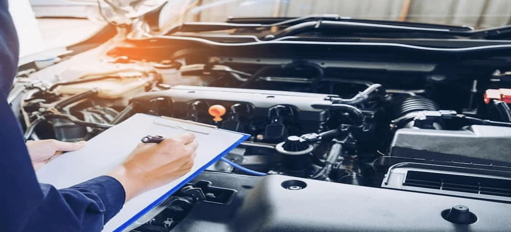

-

O ALINHAMENTO 3D é feito através da ajuda de
softwares e conta com uma tecnologia
avançada para
proporcionar um alinhamento impecável para o veículo
-
Limpeza de BICO é um procedimento relativamente
simples, que consiste na remoção de
obstruções que comprometem o funcionamento da válvula injetora (também chamada de bico injetor)
-
O sistema de FREIO é responsável diretamente pela
segurança do veículo, e a Impacto
Prime oferece
todas as peças e serviços para você rodar numa boa e sem preocupações!
-

O motorista consciente entende que a REVISÃO é tão
importante quanto usar o cinto
de segurança no
carro. Ela deve ser feita a cada 3 meses ou 10.000km
-

Somos especialistas em deixar a SUSPENSÃO do seu
carro com especificações de
fábrica, trabalhamos com
todas as peças que compõem a estrutura do seu carro, e o melhor de tudo é que te damos garantia
de 1
ano em todas as peças trocadas
-
Um BALANCEAMENTO acertivo, evita o desequilíbrio das
rodas e pneus que é o principal
causador de vibrações no volante e
do veiculo como um
todo, dependendo da grandeza do desequilíbrio do conjunto